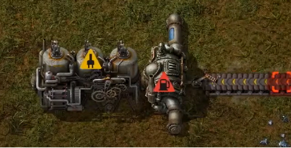
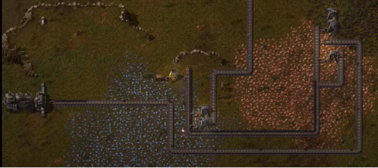
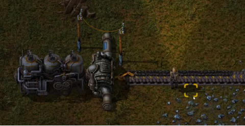

Энергия с пара
Энергия с пара
- Паровой двигатель — простейший генератор электроэнергии, доступный игроку в самом начале игры. Он генерирует электроэнергию, потребляя пар, производимый из воды, выкачиваемой погружным насосом и разогретой до 165°C в бойлере.
- Доставку же электроэнергии совершают линии электропередач
- Насос обеспечивает 1200 воды в секунду.
- Бойлер может преобразовать до 60 единиц воды в пар в секунду, обеспечивая 1,8 МВт пара (при 165 ° С).
- Бойлер потребляет топливо с КПД 50%, используя 1,8 МВт * 2 = 3,6 МВт.
- Паровой двигатель может превращать до 0,9 МВ пар в электрическую энергию (30 пара при 165 °С).
- 40 паровых двигателей обеспечивают мощность 36 МВт.
- Электроэнергия необходима, чтобы питать электрическую дрель, четыре типа манипулятора, аккумулятор, лабораторию, турели, лампу, радар, маяк и электрическую печь.
Постоянно подносить уголь к печам и бурам не практично, поэтому самое время наладить электричество и сменить питание углём на энергию.
В обращении с собой, электрические механизмы гораздо удобнее. Так как не будет нужно заправлять каждый механизм отдельно, необходимо будет питать только генератор.
Производят электроэнергию паровые двигатели, которым необходимы бойлеры для того, чтобы превращать воду в пар.

Схема подключения:
Насос → Труба → Бойлер → Паровой двигатель → ЛЭП
Чтобы наша станция по выработке электричества постоянно работала, нам нужно провести к ней уголь.

Чтобы передавать электричество в нужные части карты, используются ЛЭП.
